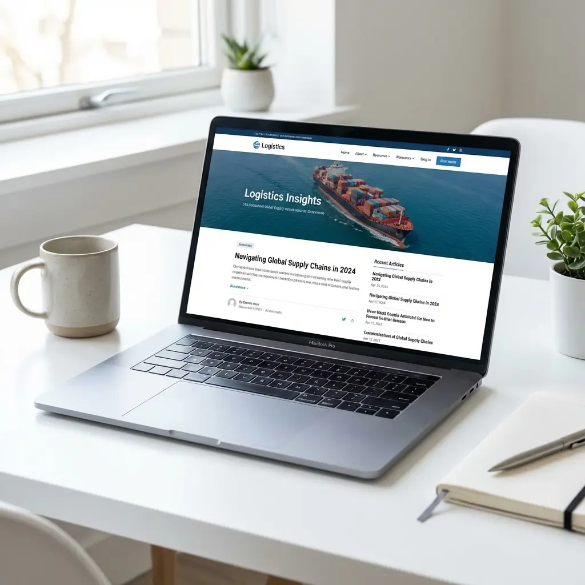

Unclear capabilities
Visitors cannot quickly see your services, coverage, facilities, or industry experience. They may also struggle to see why they should trust you.
We build fast, modern websites that help transportation companies earn trust and get more quote requests.

A polished website can still lose freight buyers.
Modern, fast websites for transportation businesses that build trust, communicate capability, and turn freight buyers into qualified inquiries.
Visitors cannot quickly see your services, coverage, facilities, or industry experience. They may also struggle to see why they should trust you.
Template copy makes specialized logistics providers sound interchangeable.
Heavy pages and awkward mobile journeys weaken trust before a buyer reaches the quote form.
Hidden calls to action, long forms, and weak proof prevent qualified visitors from taking the next step.
You’ll always know what we’re working on, why it matters, and what comes next.
Review positioning, content, UX, speed, and conversion.
Map audiences, pages, messages, and user journeys.
Create a clear visual system and responsive experience.
Develop, test, track, and prepare the launch.
Use visitor and lead data to refine the experience.
We organize the site around what buyers need to know before they trust you with their freight, inventory, or deliveries.
We turn complex services, facilities, and coverage areas into a clear story buyers can understand.
Your approved design becomes a polished site that loads quickly, works across devices, and is easy for your team to manage.
We protect the launch, verify the tracking, and use real visitor behavior to make the website more useful over time.
Reach buyers evaluating logistics providers.
We build the work around your logistics business, your goals, and the people you want to reach. That starts with services, buyer questions, website content, and quote paths.
Each step helps turn interest into a useful sales conversation.
We show you the numbers that matter: good leads, sales conversations, and what your team says is actually working.
See which leads are a real fit and which ones are just noise.
See what you’re spending, what we’re doing, and what is improving.
Follow the path from a click or visit to a real sales opportunity.
Our work is based on how logistics companies actually run and how customers choose them.
Information architecture explains modes, facilities, technology, geography, and operational strengths.
We put proof of your authority, insurance, compliance, and services where buyers can find it.
Journeys can differ for shippers, partners, carriers, and existing customers.
A sound technical setup, internal links, page titles, schema, and redirects support future search growth.
These three examples show how a logistics website can explain a complex business and help it win customers.
Both options include strategy, copy, design, and development. The right fit depends on how many services, markets, and buyer journeys the site needs to support.
Final pricing depends on page count, connected tools, site migration, and content. Hosting and ongoing growth support are priced separately.
Timing depends on page count, content readiness, integrations, and approval speed. The proposal defines milestones before work begins.
Yes. We can write copy about your services, markets, buyers, and what makes you different.
Often, yes. We check your current platform, editing needs, and any technical limits first. Then we suggest a plan for moving the site.
Yes. Each site includes a technical SEO foundation. Ongoing rankings may need a separate plan for content and trusted links.
Yes. The project can include forms, call tracking, analytics, CRM routing, and supported connections to your other tools.
Depending on your plan, support can include fixes, updates, testing, reports, and SEO work.
Book a discovery call to talk through your logistics website, your buyers, and what your business needs next, and where we can help.
Let’s talk about your website.
Schedule a Discovery CallNo pressure. Just a helpful talk about your business.